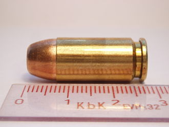

The .40 S&W (10.2×22mm) is a rimless pistol cartridge developed jointly by American firearms manufacturers Smith & Wesson and Winchester in 1990.[3] The .40 S&W was developed as a law enforcement cartridge designed to duplicate performance of the Federal Bureau of Investigation's (FBI) reduced-velocity 10mm Auto cartridge which could be retrofitted into medium-frame (9 mm size) semi-automatic handguns. It uses 0.40-inch-diameter (10 mm) bullets ranging in weight from 105 to 200 grains (6.8 to 13.0 g).
